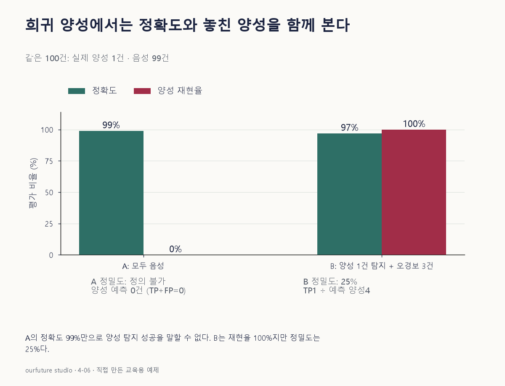

핵심 이론
정확도는 전체 관측 중 맞힌 비율이므로 많은 클래스의 영향을 크게 받는다. 실제 음성이99개이고 양성이1개인 평가집합에서 모두 음성으로 예측하면99개를 맞힌다. 정확도99%라는 계산은 틀리지 않았지만 찾으려던 양성을 하나도 발견하지 못했다. 문제는 지표의 산술 오류가 아니라 그 지표 하나로 해결하려는 목표를 대표시킨 데 있다.
평가 목적에 따라 실제 양성의 재현율, 양성 예측의 정밀도, 실제 음성의 특이도와 그 분모를 함께 확인한다. 균형 정확도는 각 클래스 재현율을 평균하므로 이진 분류에서는(민감도+특이도)/2다. 모두 음성인 모형은 이 예제에서0%와100%를 평균해50%다. 다만 균형 정확도도 양성 비율이나 오경보의 실제 비용을 대신하지 않으므로 보편적인 최선 지표라고 바꾸어 외우지 않는다.
비교 모형은 같은 평가집합·양성 기준·임곗값 정책에서 보아야 한다. 양성을 더 찾는 대신 오경보가 늘었다면 어느 오류를 더 감당할 수 있는지 결정해야 한다. 작은 자료의 한 건 차이는 큰 비율 차이가 될 수 있으므로 건수와 불확실성을 같이 남긴다. 정확도·재현율·정밀도는 이 예제의 라벨 판정으로 계산한다. AUC처럼 임곗값 이전 점수가 필요한 평가와 입력을 혼동하지 않는다.
작은 예제로 확인하기
자체100건 자료의 실제 양성은1건, 음성은99건이다. 모형A는 전부 음성, B는 양성1건을 찾고 정상3건도 양성으로 경고했다.
| 모형 | TP | FN | FP | TN | 정확도 | 재현율 |
|---|---|---|---|---|---|---|
| A | 0 | 1 | 0 | 99 | 99% | 0% |
| B | 1 | 0 | 3 | 96 | 97% | 100% |
A는 정확도가 높지만 양성을 놓쳤다. B의 정밀도는1/(1+3)=25%이므로 양성을 모두 찾았다는 이유만으로 모든 비용 조건에서 우수하다고 말할 수 없다. 균형 정확도는 A50%, B는(1+96/99)/2≈98.48%다.
그림으로 확인하기

직접 고르기
실제 양성 1건·음성 99건인 100건에서 모형 A가 전부 음성으로 예측했다. 양성 탐지가 평가 목적이다.
A의 정확도와 양성 재현율은 각각?
- 1. 99%와 0%
- 2. 99%와 99%
- 3. 100%와 0%
- 4. 1%와 100%
정답과 오답의 이유 확인하기
정답 1번 — 99%와 0%
정상 99건을 맞혔으므로 정확도 99%지만 유일한 양성을 놓쳐 재현율은 0/1=0%다. 높은 정확도만으로 양성 탐지에 성공했다고 고를 수 없다.
- 2번: 전체 정답 비율 99%를 양성 집합의 재현율로 그대로 옮겼다.
- 3번: 놓친 양성 1건도 오답이므로 정확도 100%가 아니다.
- 4번: 양성의 자료 비중 1%를 정확도로 오인했고 실제로는 양성을 찾지 못했다.
조건 하나 바꾸어 풀기
양성을 모두 찾는 B가 TP=1·FP=3·FN=0·TN=96이면 정밀도는 얼마이며 A보다 항상 낫다고 할 수 있는가?
풀이: 정밀도 25%다. 항상 낫다는 결론은 낼 수 없다.
양성 누락을 줄이는 목적에는 개선이 있지만 오경보 3건의 비용도 생긴다. 오류 비용과 허용 조건을 먼저 정해야 실제 선택을 판단할 수 있다.
다시 떠올릴 단서
많이 맞힌 클래스와 꼭 찾아야 할 클래스를 나눈다.
근거와 적용 조건
- scikit-learn balanced_accuracy_score — 각 클래스 재현율의 평균과 불균형 자료. 확인일 2026-10-30.
- scikit-learn precision_score — 정밀도 정의·pos_label·zero_division와 recall_score 연결. 확인일 2026-10-30.
상황·수치·보기·조건 변경은 자체 교육 예제다. 민간 복원 문항의 공식 정답이나 실제 성능·학습 효과를 뜻하지 않는다.
읽은 내용을 적용해 보기
양성1·음성99인 자체 고정 자료다. 표본의 불확실성·비용·모집단 우열을 자동 평가하지 않는다.